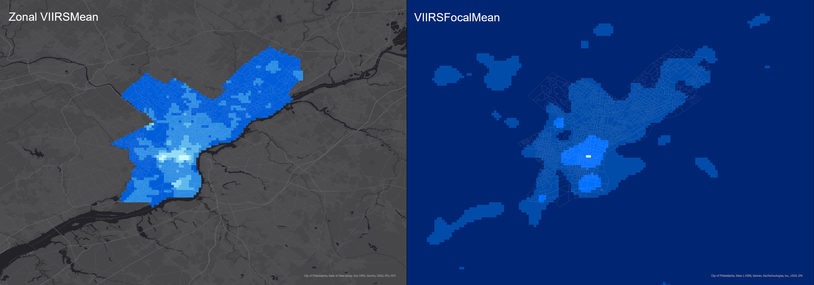
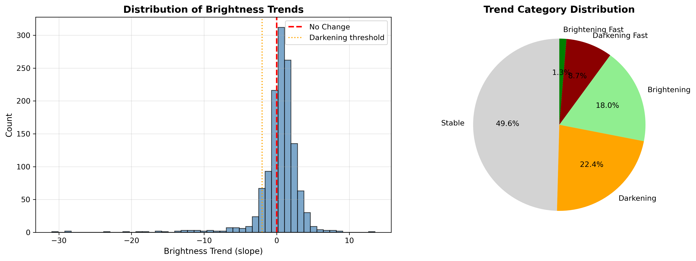
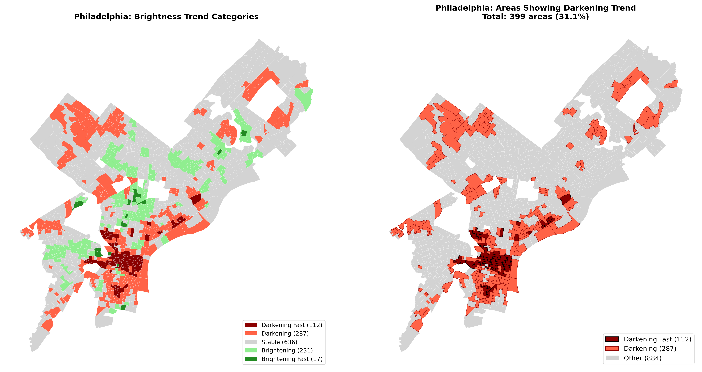

Methodology: Each variable was reclassified to a standardized 1-5 scale using natural breaks classification, enabling direct comparison across different metrics.
Python Integration: VIIRS, 311, Crime, and Census data were first integrated into philly_integrated_data.shp using geopandas
ArcGIS Processing: Reclassify tool applied to each variable → Raster Calculator combined layers
Darkness Score: Higher values = darker areas (inverted VIIRS radiance)
Range: 0.000000 - 1.000000 reclassified to 1-5 scale
Pattern: Center City shows lowest darkness scores; North and Southwest Philadelphia show highest
Low Reporting Score: Higher values = fewer complaints filed
Range: 0.000000 - 1.000000 reclassified to 1-5 scale
Insight: Areas with high darkness but low complaints indicate reporting gaps
Vulnerability Score: Based on below-median household income
Range: 0.000000 - 1.000000 reclassified to 1-5 scale
Pattern: North Philadelphia and Southwest show highest vulnerability
Crime Score: Nighttime incident density (7pm-6am)
Range: 0.000000 - 1.000000 reclassified to 1-5 scale
Correlation: High crime areas often overlap with low lighting zones
Raster Calculator:
CostSurf_Risk =
0.30 × Darkness +
0.30 × Crime +
0.20 × Low311 +
0.20 × LowIncomeInterpretation: Brighter colors = higher risk scores = priority intervention areas
Pattern: Risk concentrates in North Philadelphia, Kensington, and Southwest corridors

Zonal Statistics tool calculated mean VIIRS radiance within each block group boundary. This aggregates satellite pixel values to census geography for statistical comparison.
Focal Statistics with circular neighborhood window smooths brightness values to reveal spatial patterns. Center City shows highest brightness; peripheral neighborhoods significantly darker.
None
Key Finding: Center City is brightest; peripheral neighborhoods show significantly lower lighting levels
Where darkness, low complaints, and low income overlap
38% below city average
65% darker than average
76% fewer than average
Three criteria overlap: 1. Low brightness (VIIRS below threshold) 2. Low complaints (311 below city average) 3. Low income (Census below median)
Identified with: Python spatial analysis using geopandas on Zonal_VIIRS_Mean output
Critical Pattern: The darkest areas file 76% fewer complaints. These are also the lowest-income neighborhoods. This means the 311 system systematically misses the communities that need help most.
31.1% of Philadelphia block groups
8.7% with rapid brightness decline
49.6% with no significant change


Algorithm: Linear Regression Slope Analysis (scipy.stats.linregress)
Data Period: 2022-2024 VIIRS satellite observations
Method: For each block group, we calculated the slope of brightness values over time
Trend Classification:
| Category | Slope Threshold | Count | Percentage |
|---|---|---|---|
| Darkening Fast | slope < -2 | 112 | 8.7% |
| Darkening | -2 ≤ slope < 0 | 287 | 22.4% |
| Stable | 0 ≤ slope < 2 | 636 | 49.6% |
| Brightening | 2 ≤ slope < 5 | 231 | 18.0% |
| Brightening Fast | slope ≥ 5 | 17 | 1.3% |
None
Key Finding31.1% of Philadelphia block groups are experiencing declining lighting levels based on 2022-2024 VIIRS satellite observations.
The 112 “Darkening Fast” areas represent the highest priority for infrastructure intervention.
Streetlights date to the 1970s. Our 2022-2024 data captures the critical transition before the city’s $91M LED replacement project (launched Aug 2023).
52 routes analyzed between key Philadelphia locations: - City Hall - Temple University
- 30th Street Station - University City - Chinatown - Major transit hubs
Methods: - ArcGIS: Distance Accumulation + Optimal Path - Python: OSMnx + NetworkX for street-level routing with risk-weighted edges
Up to 20% Safer Routes
None
Key FindingChinatown route shows greatest risk reduction
By accepting a small distance penalty (1-3% longer), travelers can reduce their exposure to high-risk areas by up to 20%.
None
Workflow Summary
Python (geopandas): Integrated VIIRS, 311, Crime, Census →
philly_integrated_data.shpArcGIS Reclassify: Standardized each variable to 1-5 scale
ArcGIS Raster Calculator: Combined layers →
CostSurf_RiskArcGIS Spatial Analysis: Zonal Statistics + Focal Statistics
Python Analysis: Identified Complaint Gap areas using spatial overlay
scipy.stats: Calculated brightness trends using linear regression slope
OSMnx + NetworkX: Generated risk-weighted safe routes
Continue to Findings to see policy recommendations and conclusions.